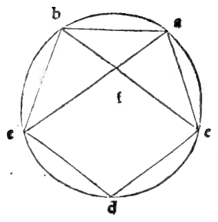
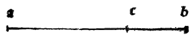
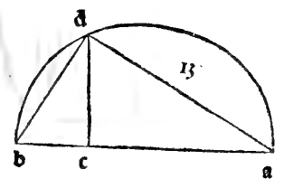
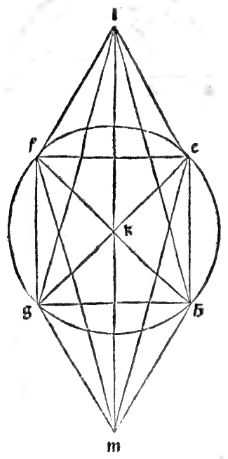
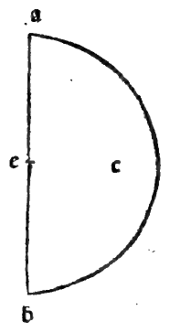
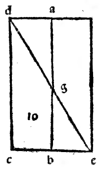
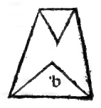

Part I: Compendium of the Divine Proportion¶
Compendio de Divina Proportione — Chapters I–LXXI · Dedicated to Ludovico Maria Sforza, Duke of Milan (Milan, 1498 / Venice, 1509)
Completed at Milan on December 14, 1498 and printed at Venice by Paganino de' Paganini on June 1, 1509 (Folios 0017–0061, f. 1r–23r). Opening any chapter provides synchronized switching across English, Italian, German, and Notes.
Outline of Chapters¶
I. Dedication, Preface & Nature of the Mathematical Sciences (Cap. I–VI)¶
Chapter I: Dedicatory Epistle on the Divine Proportion to Ludovico Maria Sforza
In the course of the years of our salvation 1498, on the ninth day of February, Most Exalted Duke, when I was present before Your Excellency within the impregnable citadel of Your illustrious city of Milan—the most worthy seat of Your customary residence—at that laudable and scientific duel attended by so many most celebrated and wise men of every rank, both religious and secular, in whom Your magnificent court continually abounds:
Chapter II: Author’s Preface to the Compendium on the Divine Proportion
Propter admirari coeperunt philosophari (“On account of wonder men began to philosophize,” Aristotle, Metaphysics I.2, 982b12). The authority of the “Master of those who know” [Aristotle; cf. Dante, Inferno IV.131] holds, Most Exalted Duke, that knowledge took its beginning from sight; just as he affirms in another place, saying: Quod nihil est in intellectu quin prius sit in sensu—that is, nothing is in the intellect that has not first offered itself in some way to the senses. And among our senses, the wise conclude that sight is the noblest; whence even among the common people it is not undeservedly said that the eye is the first portal through which the intellect understands and tastes.
Chapter III: What Is Meant by the Name ‘Mathematical’ (The Quadrivium)
This word Mathematical, Most Exalted Duke, is Greek, derived from $\mu\alpha\theta\eta\mu\alpha\tau\iota\kappa\acute{o}\varsigma$ (mathematikos / $\mu\alpha\theta\eta\tau\acute{o}\varsigma$), which in our tongue signifies disciplinable (“capable of being taught and learned”). And for our purpose, by the mathematical sciences and disciplines are understood Arithmetic, Geometry, Astrology [Astronomy], Music, Perspective, Architecture, and Cosmography, together with every other science dependent upon these.
Chapter IV: Things the Reader Must Observe for Understanding This Treatise
Furthermore, for the avoidance of difficulty in what follows, let the reader note that whenever we cite “the first of the first” ([I.1]), “the fourth of the second” ([II.4]), “the tenth of the fifth” ([V.10]), “the twentieth of the sixth” ([VI.20]), and so on up to the fifteenth Book, the first number is always to be understood as the number of the proposition (conclusione), and the second number as the number of the Book of our philosopher Euclid, whom we follow in all things as the archimandrite [supreme leader] of these faculties. That is, to say “by the fifth of the first” ([I.5]) means “by the fifth proposition of his first Book,” and so likewise for the other particular books of his complete work on the Elements and first principles of Arithmetic and Geometry. When, however, an authority adduced by us is drawn from another work of his [such as the Optics or Catoptrics] or from another author, we shall name that work and that author explicitly.
Chapter V: On the Fitting Title of the Present Treatise
It seems to me, Most Exalted Duke, that the fitting title of our treatise ought to be On the Divine Proportion (De la Divina Proportione). And this is on account of many similar correspondences (convenientie) belonging to God Himself that I find in our proportion, whereof we intend to treat in this our most useful discourse. Among these correspondences, we shall take four—and a fifth—as sufficient for our purpose:
Chapter VI: On Its Worthy Commendation
This our proportion, Most Exalted Duke, is worthy of as great prerogative and excellence as could ever be uttered regarding its infinite power; inasmuch as without knowledge of it very many things most worthy of admiration could never come to light either in philosophy or in any other science.
II. The Thirteen Marvelous Effects in Lines & Regular Polygons (Cap. VII–XXIII)¶
Chapter VII: On the First Effect of a Line Divided According to Our Proportion
Chapter VIII: How a Quantity Divided According to the Proportion Having a Mean and Two Extremes Is Understood
We must know, once these things have been well noted, that to divide a quantity according to the proportion having a mean and two extremes means to make of it two unequal parts such that the product of the lesser part and the whole undivided quantity is equal to the square of the greater part, as our Philosopher declares in the third definition of the Sixth Book ([VI.def.3]):
Chapter IX: What the Root of a Number and of Any Other Quantity Is
Chapter X: Sequel to the First Proposed Effect
Once these things have been well noted, let us return to its first proposed effect [Chapter VII] and make it clear with evident examples. For its elucidation, let us resume the very same case of $10$ adduced above, without troubling ourselves with other laborious quantities, since the very same property that is stated here occurs invariably in every quantity whatever. And for the fuller understanding of Your Highness, we shall pursue all the remaining effects by way of Arithmetic, while presupposing throughout that the rigorous scientific proofs of everything contained in our treatise are assigned geometrically with all care by our philosopher Euclid in the propositions we shall cite, according to the requirements of the conclusions.
Chapter XI: On Its Second Essential Effect
Chapter XII: On Its Third Singular Effect
Chapter XIII: On Its Fourth Ineffable Effect
Chapter XIV: On Its Fifth Marvelous Effect
If a quantity be divided according to our said proportion, the sum of the square of the lesser part and the square of the entire undivided quantity will always be triple the square of the greater part ([XIII.4] [Campanus XIII.5]):
$$b^2 + (a + b)^2 = 3a^2$$
Chapter XV: On Its Sixth Inexpressible Effect
Chapter XVI: On Its Seventh Inestimable Effect

Chapter XVII: On the Eighth Effect, the Converse of the Preceding
Chapter XVIII: On Its Ninth Effect, Surpassing All the Others
Chapter XIX: On Its Tenth Supreme Effect

Chapter XX: On Its Eleventh Most Excellent Effect

Chapter XXI: On Its Twelfth Almost Incomprehensible Effect
If a quantity be divided according to our said proportion, the square root of the sum of the square of the whole quantity and the square of its greater part will stand in the exact same ratio to the square root of the sum of the square of the said whole quantity and the square of its lesser part as the side of the cube stands to the side of the triangle of the twenty-base body [the icosahedron], when both bodies are circumscribed by one and the same sphere ([XIV.9]):
$$\frac{\sqrt{(a + b)^2 + a^2}}{\sqrt{(a + b)^2 + b^2}} = \frac{s_{\text{cube}}}{s_{\text{icosahedron}}}$$
Chapter XXII: On Its Thirteenth Most Worthy Effect
Chapter XXIII: How, Out of Reverence for Our Salvation, the Said Effects Conclude
It does not seem fitting to me, Most Exalted Duke, to extend my discourse at present to any more of its infinite effects—for paper would not suffice for the ink needed to express them all! Rather, we have chosen only these thirteen from among the rest out of reverence for the Twelvefold Company (la turba duodena, the Twelve Apostles) and its Most Holy Head, our Redeemer Christ Jesus.
III. The Five Regular Bodies, Mutual Inscriptions & Dependent Solids (Cap. XXIV–LV)¶
Chapter XXIV: On the Tenth Effect, Which Introduces the Formation of the Five Regular Bodies
Tenth Effect of the Divine Proportion
If a straight line is equal in square to the side of the equilateral pentagon and to the side of the equilateral hexagon inscribed in the same circle, then it is equal to the side of the equilateral decagon inscribed in the same circle, and the side of the pentagon is greater than the side of the hexagon and than the side of the decagon; and therefore, if the two sides of the hexagon and the decagon are joined together into a single straight line, the whole line is divided according to our Divine Proportion, and its greater part is the side of the hexagon ([XIII.9], [XIII.10]).

Chapter XXV: How It Is Not Possible for There to Be More Than Five Regular Bodies in Nature
Uniqueness of the Five Regular Polyhedra
No solid body bounded by equilateral and equiangular plane figures all equal and similar to one another can be formed beyond the five regular bodies—namely three bounded by equilateral triangles (the tetracedron of four faces, the octocedron of eight faces, and the ycocedron of twenty faces), one bounded by squares (the cubo or exacedron of six faces), and one bounded by regular pentagons (the duodecedron of twelve faces).

Chapter XXVI: How the First Regular Body, Called the Tetracedron or Pyramid, Is Formed in the Sphere
Construction of the Regular Tetrahedron in a Given Sphere ([XIII.13])
Given the diameter of a sphere, to find the side of the regular pyramid of four equilateral triangular bases (tetracedron) inscribed in that sphere, and to show that the square on the diameter of the sphere is sesquialtera (\(3 : 2\)) to the square on the side of the tetracedron.

Chapter XXVII: How the Second Regular Body, Called the Exacedron or Cube, Is Formed in the Sphere
Construction of the Cube in a Given Sphere ([XIII.15] [Campanus XIII.14])
Given the diameter of a sphere, to find the side of the cube inscribed in it, and to show that the square on the diameter of the sphere is triple (\(3 : 1\)) the square on the side of the cube.

Chapter XXVIII: How the Third Regular Body, Called the Octocedron, Is Formed in the Sphere
Construction of the Regular Octahedron in a Given Sphere ([XIII.14])
Given the diameter of a sphere, to find the side of the regular body of eight equilateral triangular bases (octocedron) inscribed in it, and to show that the square on the diameter of the sphere is double (\(2 : 1\)) the square on the side of the octocedron.

Chapter XXIX: How the Fourth Regular Body, Called the Ycocedron, Is Formed in the Sphere
Construction of the Regular Icosahedron in a Given Sphere ([XIII.16])
Given the diameter of a sphere, to construct the regular body of twenty equilateral triangular bases (ycocedron) inscribed in that sphere, and to demonstrate that the side (edge) of the ycocedron is an irrational line of the fourth species of subtraction, called the Minor (linea menore, [X.76]).
Chapter XXX: How the Fifth Regular Body, Called the Duodecedron, Is Formed in the Sphere
Construction of the Regular Dodecahedron in a Given Sphere ([XIII.17])
Given the diameter of a sphere, to construct the regular body of twelve equilateral and equiangular pentagonal bases (duodecedron) inscribed in that sphere, and to demonstrate that the side (edge) of the duodecedron is an irrational line called the Apotome or Residue (residuo, [X.73]), namely the greater segment of the side of the cube inscribed in the same sphere when divided according to our Divine Proportion.
Chapter XXXI: Rule and Way to Find the Sides of All Five Regular Bodies in One Sphere
Comparison of the Edges of All Five Regular Solids in the Same Sphere ([XIII.18])
To set out in a single plane diagram the sides (edges) of all five regular bodies inscribed in one and the same sphere, and to compare them with one another both in square (in potentia) and in length (in longitudine).
Chapter XXXII: On the Proportion of the Five Regular Bodies to One Another (Icosahedron to Dodecahedron)
Fundamental Ratios of the Icosahedron and Dodecahedron in the Same Sphere ([XIV.2], [XIV.6]–[XIV.8])
When the regular ycocedron (20 triangular faces) and the regular duodecedron (12 pentagonal faces) are inscribed in one and the same sphere:
Same Circumcircle of Faces ([XIV.2] [Campanus XIV.6]): One and the same circle circumscribes both the pentagonal base of the duodecedron and the triangular base of the ycocedron.
Equal Central Altitude: Consequently, the perpendiculars drawn from the center of the sphere to the center of a pentagonal face of the duodecedron and to the center of a triangular face of the ycocedron are equal to one another; hence a single sphere inscribed within them touches the faces of both bodies equally!
Ratio of Total Surfaces and Ratio of Solid Volumes ([XIV.7], [XIV.8]): The total surface of the twelve pentagons of the duodecedron has to the total surface of the twenty triangles of the ycocedron—and likewise the solid volume (corporatura) of the duodecedron has to the solid volume of the ycocedron—the exact same proportion as the side of the cube has to the side of the ycocedron? Nay, the total surface (and solid volume) of the ycocedron has to the total surface (and solid volume) of the duodecedron the ratio of the side of the ycocedron to the side of the cube? Let us state Campanus’s exact theorem ([XIV.6]–[XIV.8]):
Because the perpendiculars from the center of the sphere to the faces of both solids are equal (\(r_{\text{in}}\)), each solid is resolved into pyramids having the sphere’s center as common apex and height \(r_{\text{in}}\) (12 pentagonal pyramids for the duodecedron, 20 triangular pyramids for the ycocedron). Therefore, the solid volume of the duodecedron is to the solid volume of the ycocedron exactly as the total surface area of the duodecedron is to the total surface area of the ycocedron!
And by the seventh and eighth of the fourteenth, the surface (and volume) of the duodecedron has to the surface (and volume) of the ycocedron the ratio of the side of the cube (\(s_{\text{cube}}\)) to the side of the ycocedron (\(s_{20}\)):
\[\frac{\text{Vol}(\text{:term:`Dodecahedron <dodecahedron>`})}{\text{Vol}(\text{:term:`Icosahedron <icosahedron>`})} = \frac{\text{Area}(\text{:term:`Dodecahedron <dodecahedron>`})}{\text{Area}(\text{:term:`Icosahedron <icosahedron>`})} = \frac{s_{\text{cube}}}{s_{\text{icosa}}} = \sqrt{\frac{5 + \sqrt{5}}{6}}?\]Wait: in a sphere of radius \(R\), the circumradius \(\rho\) of both the triangle of the icosahedron and the pentagon of the dodecahedron is \(\rho = R\sqrt{\frac{3-\sqrt{5}}{2}}\)? No, \(r_{\text{in}}^{2} + \rho^{2} = R^{2}\): since both faces have the same circumradius \(\rho\), the icosahedron has a larger edge (\(s_{20} = \rho\sqrt{3}\)) than the dodecahedron (\(s_{12} = \rho\sqrt{\frac{5-\sqrt{5}}{2}}\)), and the icosahedron has a larger surface area and larger volume than the dodecahedron! Specifically:
\[\frac{\text{Vol}(\text{:term:`Icosahedron <icosahedron>`})}{\text{Vol}(\text{:term:`Dodecahedron <dodecahedron>`})} = \frac{\text{Area}(\text{:term:`Icosahedron <icosahedron>`})}{\text{Area}(\text{:term:`Dodecahedron <dodecahedron>`})} = \frac{s_{\text{cube}}}{s_{\text{icosa}}}\]because \(s_{\text{cube}} > s_{\text{icosa}}\) (as proved in Chapter XXXI), so the ratio \(s_{\text{cube}} : s_{\text{icosa}}\) is a ratio of greater inequality (\(\sqrt{\frac{10}{3(5-\sqrt{5})}} = \sqrt{\frac{5+\sqrt{5}}{6}} > 1\))!
Chapter XXXIII: On the Proportion of the Surfaces and Solid Volumes of All the Regular Bodies
Continuing with the fourteenth book of our author (with the additions and commentaries of Campanus), we summarize how the surfaces and volumes of the other regular bodies—the tetracedron, the cube, and the octocedron—are compared when inscribed in the same sphere ([XIV.9], [XIV.10]).
Chapter XXXIV: On the Inscriptions of the Five Regular Bodies in One Another
Enumeration of the Mutual Inscriptions of the Five Regular Solids (Campanus Book XV)
If each of the five regular bodies could be inscribed in each of the other four, there would be \(5 \times 4 = 20\) mutual inscriptions in all (four for each of the five bodies). Yet in geometric truth, Campanus demonstrates that twelve principal inscriptions are regularly constructed in Book XV (Propositions 1–12), while at the end of these chapters (Chapter XLVI) we shall examine why the remaining combinations are excluded—most notably why the duodecedron hospitably receives all four of the other regular bodies within itself, whereas the ycocedron denies entry to the octocedron.
Chapter XXXV: How the Octocedron Is Formed and Inscribed in the Tetracedron
Inscribing the Octahedron in the Tetrahedron (Campanus XV.1)
In a given regular pyramid of four equilateral triangular bases (tetracedron), to inscribe the regular body of eight equilateral triangular bases (octocedron) so that the six solid angles of the octocedron stand upon the midpoints of the six edges of the tetracedron.
Chapter XXXVI: How the Tetracedron Is Placed in the Cube
Inscribing the Tetrahedron in the Cube (Campanus XV.2)
In a given cube (exacedron), to inscribe the regular pyramid of four equilateral triangular bases (tetracedron) so that the four vertices of the tetracedron stand at four non-adjacent vertices of the cube, and the six edges of the tetracedron are the six face diagonals of the six square faces of the cube.
Chapter XXXVII: How the Octocedron Is Placed in the Cube
Inscribing the Octahedron in the Cube (Campanus XV.3)
In a given cube (exacedron), to inscribe the regular body of eight equilateral triangular bases (octocedron) so that the six solid angles of the octocedron stand at the centers of the six square faces of the cube.
Chapter XXXVIII: How the Exacedron or Cube Is Formed in the Octocedron
Inscribing the Cube in the Octahedron (Campanus XV.4)
In a given regular body of eight equilateral triangular bases (octocedron), to inscribe the cube (exacedron) so that the eight solid angles of the cube stand at the centers of the eight triangular faces of the octocedron.
Chapter XXXIX: How the Tetracedron Is Formed in the Octocedron
Inscribing the Tetrahedron in the Octahedron (Campanus XV.5)
In a given regular body of eight triangular bases (octocedron), to inscribe the regular body of four triangular bases (tetracedron) so that the four vertices of the tetracedron stand at four alternating centers of the eight faces of the octocedron.
Chapter XL: How the Duodecedron Is Formed in the Ycocedron
Inscribing the Dodecahedron in the Icosahedron (Campanus XV.6)
In a given regular body of twenty equilateral triangular bases (ycocedron), to inscribe the regular body of twelve equilateral and equiangular pentagonal bases (duodecedron) so that the twenty vertices of the duodecedron stand at the twenty centers of the triangular faces of the ycocedron.
Chapter XLI: How the Exacedron or Cube Is Placed in the Ycocedron
Inscribing the Cube in the Icosahedron (Campanus XV.7)
In a given regular body of twenty triangular bases (ycocedron), to inscribe the cube (exacedron) so that the eight vertices of the cube stand at eight of the twenty centers of the triangular faces of the ycocedron.
Chapter XLII: How the Tetracedron Is Formed in the Ycocedron
Inscribing the Tetrahedron in the Icosahedron (Campanus XV.8)
In a given regular body of twenty triangular bases (ycocedron), to inscribe the regular body of four triangular bases (tetracedron) so that the four vertices of the tetracedron stand at four of the twenty centers of the triangular faces of the ycocedron.
Chapter XLIII: How the Ycocedron Is Formed in the Duodecedron
Inscribing the Icosahedron in the Dodecahedron (Campanus XV.9)
In a given regular body of twelve pentagonal bases (duodecedron), to inscribe the regular body of twenty equilateral triangular bases (ycocedron) so that the twelve vertices of the ycocedron stand at the twelve centers of the pentagonal faces of the duodecedron.
Chapter XLIV: How the Ycocedron Is Placed in the Cube
Inscribing the Icosahedron in the Cube (Campanus XV.10)
In a given cube (exacedron), to inscribe the regular body of twenty equilateral triangular bases (ycocedron) so that the twelve vertices of the ycocedron stand in pairs along six median lines on the six square faces of the cube (or at the twelve centers via the inscribed octocedron/duodecedron).
Chapter XLV: How the Octocedron Is Placed in the Duodecedron
Inscribing the Octahedron in the Dodecahedron (Campanus XV.11)
In a given regular body of twelve pentagonal bases (duodecedron), to inscribe the regular body of eight equilateral triangular bases (octocedron) so that the six solid angles of the octocedron stand upon the midpoints of six opposite edges of the duodecedron.
Chapter XLVI: How the Exacedron and Tetracedron Are Placed in the Duodecedron
Inscribing the Cube and the Tetrahedron in the Dodecahedron (Campanus XV.12)
In a given regular body of twelve pentagonal bases (duodecedron), to inscribe the cube (exacedron) and the pyramid of four triangular bases (tetracedron) so that their vertices stand at vertices of the duodecedron.
Chapter XLVII: How the Sphere Is Placed and Inscribed in Each of the Five Regular Bodies
Inscribing a Sphere in Any of the Five Regular Solids (Campanus XV.13)
In any given one of the five regular bodies (tetracedron, cubo, octocedron, ycocedron, or duodecedron), to inscribe a sphere that touches all the plane bases (faces) of that body at their centers.
Chapter XLVIII: Solid and Skeletal Forms of the Tetracedron, Regular, Truncated, and Elevated
Having demonstrated the theoretical generation, proportions, and mutual inscriptions of all five regular bodies, we now present to Your Ducal Highness’s eyes their true perspective images—drawn by the hand of our Leonardo da Vinci—together with their truncated (abscisi or tagliati) and elevated (elevati or pontuti) dependent bodies, beginning with the first regular body, the tetracedron (Plates I–VI).
Chapter XLIX: Disposition of the Exacedron or Cube: Regular, Truncated, and Elevated
Following the same threefold order—regular, truncated (absciso), and elevated (elevato), each in solid (solido) and hollow (vacuo) perspective—we now describe the second regular body, the exacedron or cube, and its immediate dependents (Plates VII–XII).
Chapter L: Disposition of the Octocedron: Regular, Truncated, and Elevated
Next we describe the third regular body, the octocedron of eight equilateral triangular bases, together with its truncated (absciso) and elevated (elevato) dependent bodies in solid and hollow perspective (Plates XIII–XVIII).
Chapter LI: Disposition of the Ycocedron: Regular, Truncated, and Elevated
We come now to the fourth regular body, the ycocedron of twenty equilateral triangular bases, and its truncated (absciso) and elevated (elevato) dependent bodies in solid and hollow perspective (Plates XIX–XXIV).
Chapter LII: Disposition of the Duodecedron: Regular, Truncated, Elevated, and Elevated Truncated Bodies
Now we describe the fifth and noblest regular body, the duodecedron of twelve regular pentagonal bases, together with its truncated (absciso) and elevated (elevato) dependents, as well as the further bodies formed by elevating the truncated bodies (abscisi elevati) (Plates XXV–XXXIV).
Chapter LIII: Formation and Origin of the Body of Twenty-Six Bases
Beyond the immediate truncations and elevations of the five regular bodies, another most noble and useful dependent body is generated from the cube, called the Vigintisex Basium (the Body of Twenty-Six Bases, modern rhombicuboctahedron), shown both plain and elevated in Plates XXXV–XXXVIII.
Chapter LIV: On the Body of Seventy-Two Bases (Septuaginta Duarum Basium) and Its Use in Vaults
Continuing further along this path toward the sphere, we arrive at the celebrated Body of Seventy-Two Bases (Septuaginta Duarum Basium), depicted in solid and hollow perspective in Plates XXXIX and XL, which is of supreme utility in architecture for the coffered vaults of round temples, tribunes, and cupolas.

Chapter LV: How Forms of Bodies Proceed to Infinity, and Why Plato Assigned the Solids to the Elements
From what has been shown in the preceding chapters, most lofty Duke, any speculative intellect can readily understand how infinitely many more dependent bodies (in infinito) can be formed beyond those already described, and why the divine philosopher Plato in his Timaeus assigned the five regular bodies alone to the five simple bodies of the universe.
IV. Sphere, Oblong Bodies, Mensuration, Plate Concordance & Glossary (Cap. LVI–LXXI)¶

Chapter LVI: On the Spherical Body and How It Is Formed
Definition and Generation of the Sphere ([XI.Def.14])
The sphere is a solid figure described by the revolution of a semicircle when its diameter remains fixed and the semicircle is turned completely around until it returns to the place from which it began to move; and the center of the sphere is the same as the center of the semicircle ([XI.Def.14]).
Chapter LVII: How Stonemasons May Carve the Five Regular Bodies from a Spherical Stone
In this sphere, most lofty Duke, all five regular bodies are imagined and carved in the following manner—an explanation that will also show how a stonemason (lapicida or scarpellino) can fashion any of the five regular bodies out of a spherical stone cannonball (vna pietra de bombarda / balotta):

Chapter LVIII: On Oblong Bodies, and First on the Round Column (Cylinder)
Definition and Generation of the Round Column (Cylinder, [XI.Def.21])
The round column (colonna rotonda, cylinder) is a solid body contained between two equal and parallel circular bases, described by the revolution of a right-angled parallelogram when one of its sides containing the right angle remains fixed as the axis and the parallelogram is turned completely around until it returns to the place from which it began to move ([XI.Def.21]). And the round column, the sphere, and the circle that have the same diameter all share one and the same center.
Chapter LIX: On Lateral Columns, and First on the Three-Sided Column (Serratile Body)
Another species of columns is called lateral or faceted (colonne laterate, prisms), of which the first is the three-sided or triangular column (colonna laterata trilatera, Plates XLV–XLVI):
Chapter LX: On Four-Sided Lateral Columns and the Five Species of Quadrilaterals
The second species of lateral columns comprises the four-sided or quadrilateral columns (colonne laterate quadrilatere, Plates XLVII–XLVIII), which have two parallel quadrangular bases (upper and lower) surrounded by four rectangular or parallelogrammic lateral faces.

Chapter LXI: On Five-Sided Lateral Columns and How Lateral Columns Proceed to Infinity
In the third place among lateral columns stand the five-sided or pentagonal columns (colonne laterate pentagone, Plates XLIX–L, and marginal diagram 0054.g6.png):

Chapter LXII: On the Way to Measure All Kinds of Columns, and First the Round Columns
General Rule for the Volume of a Round Column (Cylinder)
First find the area of one of its circular bases by squaring the diameter of the base and taking eleven-fourteenths (\(\frac{11}{14}\)) of that square, according to the close approximation discovered by the noble geometer Archimedes in his book De quadratura circuli (On the Measurement of the Circle). Then multiply the area of the circular base by the altitude (altezza) of the column; the final product is the solid volume (massa corporea) of the entire round column:

Chapter LXIII: On the Way to Know How to Measure All Lateral (Prismatic) Columns
General Rule for the Volume of Any Lateral Column (Prism)
In every lateral column, whatever be the number or shape of its lateral faces, first find the exact plane area (quadratura) of one of its polygonal bases, and multiply that base area by the perpendicular altitude (altezza ouer lunghezza) of the column. The final product is infallibly the exact solid volume (massa corporale ouer capacita) of the column:

Chapter LXIV: On Pyramids and All Their Differences, and First on the Round Pyramid (Cone)
Definition and Three Species of the Round Pyramid (Cone, [XI.Def.18])
With our philosopher in the eleventh book, we define the round pyramid (cone) as a solid figure traced out by the revolution of a right-angled triangle when one of its two sides containing the right angle remains fixed as the axis and the triangle is turned completely around until it returns to the place from which it began to move. Its fixed side is the axis (l’axe), its base swept out by the other leg is a circle, and it is called the pyramid of the round column (having the same base and altitude). Moreover, according to the ratio of the fixed leg to the revolving leg, there are three species of round pyramids ([XI.Def.18]):
Right-Angled (*Rectangola*): When the fixed leg \(ab\) is equal to the revolving leg \(bc\) (\(ab = bc\)).
Acute-Angled (*Acutiangola*): When the fixed leg \(ab\) is longer than the revolving leg \(bc\) (\(ab > bc\)).
Obtuse-Angled (*Obtusiangola*): When the fixed leg \(ab\) is shorter than the revolving leg \(bc\) (\(ab < bc\)).

Chapter LXV: On Lateral Pyramids and Their Varieties: Right, Oblique, and Truncated
Definition and Derivation of Lateral Pyramids ([XI.Def.12])
In the eleventh book, our philosopher defines the lateral pyramid as a solid figure contained by plane surfaces that rise from a single plane base to meet at a single opposite point overhead, called the cone or apex (cono dela pyramide).

Chapter LXVI: On the Way and Rule to Know How to Measure Every Complete Pyramid
Universal Rule for the Volume of Any Complete Pyramid or Cone ([XII.7], [XII.10])
First find the area of the base of the pyramid by the rules given above for round and lateral columns (Chapters LXII–LXIII), and multiply that base area by the perpendicular altitude (axe / altezza) of the pyramid; the product is the solid volume of the entire corresponding column. Then take one-third (\(\frac{1}{3}\)) of that column’s volume; that third part is infallibly and exactly the solid volume (quantità corporale) of the pyramid:

Chapter LXVII: Demonstration That Every Lateral Pyramid Is One-Third of Its Column
Resolution of Every Prism into Triangular Prisms (Corpi Seratili) and Triangulation of Polygons ([XII.7], [I.32])
Every three-sided column (corpo seratile) is divisible into three equal triangular pyramids, and is therefore triple (\(3 : 1\)) each of them ([XII.7], Campanus XII.6).
Every \(n\)-sided polygon is resolvable into \(n - 2\) triangles by drawing diagonals from one vertex to the non-adjacent vertices ([I.32] Corollary), and therefore every \(n\)-sided lateral column is resolvable into \(n - 2\) triangular columns (corpi seratili), each of which is triple its pyramid; hence the whole lateral column is triple (\(3 : 1\)) the whole lateral pyramid!
Chapter LXVIII: How Short or Truncated Pyramids Are Measured
Rule for Measuring Any Truncated Pyramid or Cone (Frustum)
First complete the truncated pyramid to its full apex (*cono*) by the proportional rule given in our published great work (:cite:`Summa de Arithmetica <pacioli:summa>`: using the ratio of a side or diameter of the lower base \(B_1\) to the corresponding side or diameter of the parallel upper cut \(B_2\) and the height \(h_{\text{frustum}}\) of the frustum to find the height \(h_{\text{top}} = \frac{s_2}{s_1 - s_2}\,h_{\text{frustum}}\) of the missing top pyramid, and hence the total height \(h_{\text{total}} = h_{\text{frustum}} + h_{\text{top}}\) of the completed pyramid).
Second, measure the entire completed pyramid (base \(B_1\) and total height \(h_{\text{total}}\)) by the rule of Chapter LXVI (\(V_{\text{total}} = \frac{1}{3}B_1\,h_{\text{total}}\)), and set that total volume aside.
Third, measure the small upper pyramid (*pyramidella*) that was added to the top to make it complete (base \(B_2\) and height \(h_{\text{top}}\), giving \(V_{\text{top}} = \frac{1}{3}B_2\,h_{\text{top}}\)).
Finally, subtract the volume of the small added pyramid (*pyramidella*) from the volume of the entire completed pyramid:
\[\text{Volume}_{\text{truncated}} = V_{\text{total}} - V_{\text{top}} = \frac{1}{3}\,B_{1}\,h_{\text{total}} - \frac{1}{3}\,B_{2}\,h_{\text{top}}\]The remainder is necessarily the exact solid volume of the truncated pyramid! Among all the methods given by geometers, this way is the shortest and most secure, and holds equally for round and lateral truncated pyramids.
Chapter LXIX: On the Measure of Regular Bodies and Panegyric to Duke Ludovico Maria Sforza
It now follows to speak of the mensuration (dimensione) of the five regular bodies and of all their dependent bodies (abscisi and elevati).
Chapter LXX: How to Locate in Order All the Perspective Bodies and Their Physical Models
Because where there is no order there is always confusion (ubi non est ordo, ibi est confusio), for the full understanding of this Compendium—and so that Your Ducal Highness may readily find both the perspective figures drawn on the plane pages of this book and the three-dimensional material models (le forme materiali) according to their public table—you shall observe the following method:
Chapter LXXI: Glossary of Mathematical Terms Used in the Compendium
There are certain technical terms (vocabuli), most lofty Duke, introduced by the ancient sages among the mathematical disciplines for the precise understanding of their parts and to avoid all equivocation, which might trouble a reader not deeply versed in geometry, and which we have frequently used in this Compendium so as not to deviate from the Ancients. It therefore seems useful to define them briefly here in order: